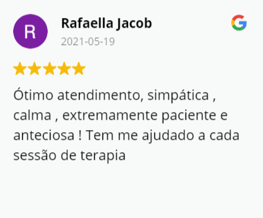
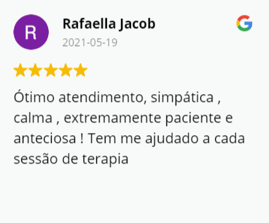

Agende sua consulta!
Agende sua consulta!
Atendimento individual.
Atendimento para adultos.
Atendimento Online por (Vídeo Chamada)
para o Mundo todo!
.png)
Através de encontros semanais,
com duração de 50 minutos,
a
terapia possui, entres outros
objetivos, tratar problemas
psicológicos.
A terapia é muito mais do que uma
conversa com um profissional,
é um ambiente de aprendizado sobre si
mesmo.
Durante a sessão o paciente,
consegue compreender mais sobre si,
a lidar com suas emoções,
melhorar seus relacionamentos,
aumentar sua autoconfiança e muito mais.
A adolescência é uma fase cheia de descobertas, novos aprendizados e muitos conflitos.
O papel do psicólogo no momento dos questionamentos da adolescência é muito importante,
tanto para o adolescente, quanto para a relação do jovem com seus pais.
Agende hoje mesmo uma sessão para o seu filho e ajude-o a passar melhor por essa fase da vida

Olá, sou a psicóloga Elisangela Oliveira e o meu trabalho é ajudar você a lidar com suas emoções, pensamentos e comportamentos. Há 8 anos tenho me dedicado a estudar o comportamento e a mente humana.
Agende sua consulta!
Atendimento individual.
Atendimento para adultos.
Atendimento Online por (Vídeo Chamada)
para o Mundo todo!
Também conhecida como a TCC, que é um modelo de psicoterapia breve dentro da psicologia, que tem a finalidade de tratar questões de cada pessoa em sua singularidade.

A terapia online é uma sessão de terapia por vídeo-chamada, possível para todos que tenham conexão com internet.
O atendimento online tem o mesmo vínculo, qualidade e ética do atendimento presencial.
A data e hora da terapia são agendadas com antecedência.

Qual foi a última vez que você parou para ter alguns cuidados na saúde mental?

Gerar a promoção da saúde mental é fundamental para ter uma vida equilibrada e somente traz benefícios.
A rotina está cada vez mais corrida e a terapia online é a evolução da saúde mental para atender uma demanda da sociedade.

É possível realizar a consulta de qualquer lugar do mundo, o que facilita o acesso à uma saúde mais acessível.
.png)
.png)
.png)
.png)
.png)
.png)
.png) 
